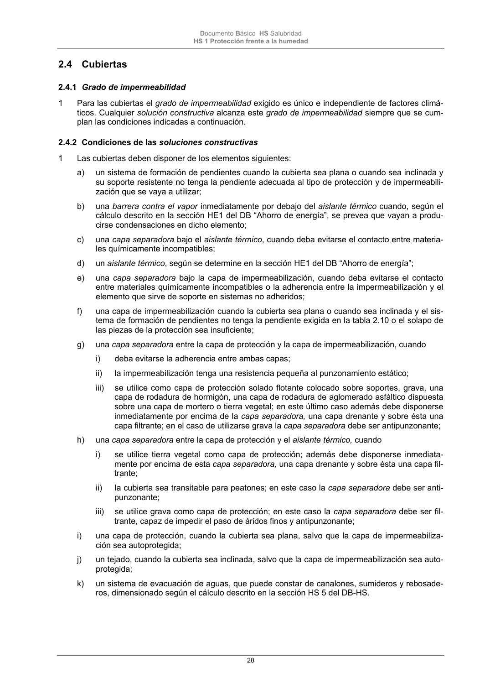

DB-HS Salubridad · edición 2022-06-14 · capa oficial
Documento DB-HS-oficial · SHA-256 del PDF 68df3caacc95f71aee2ec1ba7b2c65ae66155c21e3a8785521b8fdd4fd640d3b
Copia fiel del PDF fuente · Fuente oficial
Ficha de la disposición en la fuente oficial
Formatos: JSON del segmento · Markdown
2.4.2 Condiciones de las soluciones constructivas 1 Las cubiertas deben disponer de los elementos siguientes: a) un sistema de formación de pendientes cuando la cubierta sea plana o cuando sea inclinada y su soporte resistente no tenga la pendiente adecuada al tipo de protección y de impermeabili- zación que se vaya a utilizar; b) una barrera contra el vapor inmediatamente por debajo del aislante térmico cuando, según el cálculo descrito en la sección HE1 del DB “Ahorro de energía”, se prevea que vayan a produ- cirse condensaciones en dicho elemento; c) una capa separadora bajo el aislante térmico, cuando deba evitarse el contacto entre materia- les químicamente incompatibles; d) un aislante térmico, según se determine en la sección HE1 del DB “Ahorro de energía”; e) una capa separadora bajo la capa de impermeabilización, cuando deba evitarse el contacto entre materiales químicamente incompatibles o la adherencia entre la impermeabilización y el elemento que sirve de soporte en sistemas no adheridos; f) una capa de impermeabilización cuando la cubierta sea plana o cuando sea inclinada y el sis- tema de formación de pendientes no tenga la pendiente exigida en la tabla 2.10 o el solapo de las piezas de la protección sea insuficiente; g) una capa separadora entre la capa de protección y la capa de impermeabilización, cuando i) deba evitarse la adherencia entre ambas capas; ii) la impermeabilización tenga una resistencia pequeña al punzonamiento estático; iii) se utilice como capa de protección solado flotante colocado sobre soportes, grava, una capa de rodadura de hormigón, una capa de rodadura de aglomerado asfáltico dispuesta sobre una capa de mortero o tierra vegetal; en este último caso además debe disponerse inmediatamente por encima de la capa separadora, una capa drenante y sobre ésta una capa filtrante; en el caso de utilizarse grava la capa separadora debe ser antipunzonante; h) una capa separadora entre la capa de protección y el aislante térmico, cuando i) se utilice tierra vegetal como capa de protección; además debe disponerse inmediata- mente por encima de esta capa separadora, una capa drenante y sobre ésta una capa fil- trante; ii) la cubierta sea transitable para peatones; en este caso la capa separadora debe ser anti- punzonante; iii) se utilice grava como capa de protección; en este caso la capa separadora debe ser fil- trante, capaz de impedir el paso de áridos finos y antipunzonante; i) una capa de protección, cuando la cubierta sea plana, salvo que la capa de impermeabiliza- ción sea autoprotegida; j) un tejado, cuando la cubierta sea inclinada, salvo que la capa de impermeabilización sea auto- protegida; k) un sistema de evacuación de aguas, que puede constar de canalones, sumideros y rebosade- ros, dimensionado según el cálculo descrito en la sección HS 5 del DB-HS. Documento Básico HS Salubridad HS 1 Protección frente a la humedad 29
